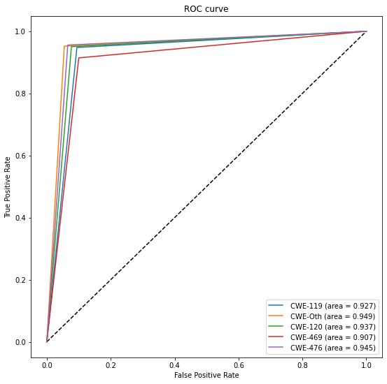

SVM
SVM#
import pandas as pd
import os
import numpy as np
from sklearn.preprocessing import LabelEncoder, OneHotEncoder
import argparse
from sklearn.metrics import accuracy_score
from sklearn.metrics import roc_curve
from sklearn.metrics import auc
from sklearn import datasets, metrics
from sklearn.model_selection import train_test_split
from sklearn.metrics import classification_report
import matplotlib.pyplot as plt
from sklearn.metrics import roc_curve
def load_data(path, column, rdm_state):
dataframe = pd.read_csv(path)
y = dataframe[column].astype(int) # numberize the labels i.e., tranforms True = 1, False = 0
print("Label Distribution: ")
print(y.value_counts())
y = y.values
X = dataframe.iloc[:, 7:]
num_features = len(X.columns)
X = X.values
print("Dataset: ")
print(f"\nShape of features: {X.shape} (# samples, # features, channel) of type {type(X)}" )
print(f"Shape of labels: {y.shape} (# samples, ) of type {type(X)}" )
X_train, X_test, y_train, y_test = train_test_split(X, y, test_size=0.10, random_state=rdm_state)
return X_train, X_test, y_train, y_test
X_cwe_119_train, X_cwe_119_test, y_cwe_119_train, y_cwe_119_test = load_data('cwe_119_train.csv', 'CWE-119', 42)
X_cwe_120_train, X_cwe_120_test, y_cwe_120_train, y_cwe_120_test = load_data('cwe_120_train.csv','CWE-120',42)
X_cwe_469_train, X_cwe_469_test, y_cwe_469_train, y_cwe_469_test = load_data('cwe_469_train.csv','CWE-469',42)
X_cwe_476_train, X_cwe_476_test, y_cwe_476_train, y_cwe_476_test = load_data('cwe_476_train.csv','CWE-476',42)
X_cwe_other_train, X_cwe_other_test, y_cwe_other_train, y_cwe_other_test = load_data('cwe_other_train.csv','CWE-other',42)
Label Distribution:
1 1174
0 1174
Name: CWE-476, dtype: int64
Dataset:
Shape of features: (2348, 1533) (# samples, # features, channel) of type <class 'numpy.ndarray'>
Shape of labels: (2348,) (# samples, ) of type <class 'numpy.ndarray'>
def predict_report(train_x,test_x,train_y,test_y):
svm_model = svm.SVC(decision_function_shape='ovo') # ovo for classification
svm_model = svm_model.fit(train_x, train_y)
y_predict = svm_model.predict(test_x)
print("Accuracy score %.3f" %metrics.accuracy_score(test_y, y_predict))
print(classification_report(test_y, y_predict))
print("CWE 119")
predict_report(X_cwe_119_train, X_cwe_119_test, y_cwe_119_train, y_cwe_119_test) ##cwe 119
print("CWE 120")
predict_report(X_cwe_120_train, X_cwe_120_test, y_cwe_120_train, y_cwe_120_test) ##cwe 120
print("CWE 469")
predict_report(X_cwe_469_train, X_cwe_469_test, y_cwe_469_train, y_cwe_469_test) ##cwe 469
print("CWE 476")
predict_report(X_cwe_476_train, X_cwe_476_test, y_cwe_476_train, y_cwe_476_test) ##cwe 476
print("CWE other")
predict_report(X_cwe_other_train, X_cwe_other_test, y_cwe_other_train, y_cwe_other_test) ##cwe other
CWE 119
Accuracy score 0.928
precision recall f1-score support
0 0.94 0.91 0.92 255
1 0.92 0.95 0.93 287
accuracy 0.93 542
macro avg 0.93 0.93 0.93 542
weighted avg 0.93 0.93 0.93 542
CWE 120
Accuracy score 0.937
precision recall f1-score support
0 0.95 0.92 0.94 507
1 0.93 0.95 0.94 525
accuracy 0.94 1032
macro avg 0.94 0.94 0.94 1032
weighted avg 0.94 0.94 0.94 1032
CWE 469
Accuracy score 0.908
precision recall f1-score support
0 0.90 0.90 0.90 30
1 0.91 0.91 0.91 35
accuracy 0.91 65
macro avg 0.91 0.91 0.91 65
weighted avg 0.91 0.91 0.91 65
CWE 476
Accuracy score 0.945
precision recall f1-score support
0 0.96 0.93 0.95 122
1 0.93 0.96 0.94 113
accuracy 0.94 235
macro avg 0.94 0.95 0.94 235
weighted avg 0.95 0.94 0.94 235
CWE other
Accuracy score 0.949
precision recall f1-score support
0 0.95 0.95 0.95 329
1 0.95 0.95 0.95 334
accuracy 0.95 663
macro avg 0.95 0.95 0.95 663
weighted avg 0.95 0.95 0.95 663
from sklearn import svm
from sklearn import metrics
svm_model = svm.SVC(decision_function_shape='ovo') # ovo for classification
svm_model = svm_model.fit(X_cwe_476_train, y_cwe_476_train)
def generate_roc_plot(model, x_test, y_test):
# Generate a prediction using model.predict()
# and calculate it's shape:
print("Generate a prediction")
prediction = model.predict(x_test).ravel()
print("prediction shape:", prediction.shape)
fpr_keras, tpr_keras, thresholds_keras = roc_curve(y_test, prediction)
auc_keras = auc(fpr_keras, tpr_keras)
#generate plot
plt.figure(1)
plt.plot([0, 1], [0, 1], 'k--')
plt.plot(fpr_keras, tpr_keras, label=' (area = {:.3f})'.format(auc_keras))
plt.xlabel('False positive rate')
plt.ylabel('True positive rate')
plt.title('ROC curve')
plt.legend(loc='best')
plt.show()
generate_roc_plot(svm_model, X_cwe_476_test, y_cwe_476_test)
Generate a prediction
prediction shape: (235,)
from sklearn import svm
from sklearn import metrics
def generate_roc_plots(x_train,y_train,x_test, y_test, names):
fpr, tpr, aucs = [], [], []
for i in range(5):
svm_model = svm.SVC(decision_function_shape='ovo') # ovo for classification
svm_model = svm_model.fit(x_train[i], y_train[i])
pred = svm_model.predict(x_test[i])
print("Accuracy score %.3f" %metrics.accuracy_score(y_test[i], pred))
print(classification_report(y_test[i], pred))
fpr_keras, tpr_keras, thresholds_keras = roc_curve(y_test[i], pred)
auc_keras = auc(fpr_keras, tpr_keras)
fpr.append(fpr_keras)
tpr.append(tpr_keras)
aucs.append(auc_keras)
#generate plot
plt.figure(figsize=(9,9))
plt.plot([0, 1], [0, 1], 'k--')
for i in range(5):
plt.plot(fpr[i], tpr[i], label=' {} (area = {:.3f})'.format(names[i],aucs[i]))
plt.xlabel('False Positive Rate')
plt.ylabel('True Positive Rate')
plt.title('ROC curve')
plt.legend(loc='best')
plt.show()
x_tests = [X_cwe_119_test, X_cwe_other_test, X_cwe_120_test, X_cwe_469_test, X_cwe_476_test]
x_trains = [X_cwe_119_train,X_cwe_other_train,X_cwe_120_train,X_cwe_469_train, X_cwe_476_train]
y_trains = [y_cwe_119_train,y_cwe_other_train,y_cwe_120_train,y_cwe_469_train,y_cwe_476_train]
y_tests = [y_cwe_119_test, y_cwe_other_test, y_cwe_120_test, y_cwe_469_test, y_cwe_476_test]
names = ['CWE-119', 'CWE-Oth', 'CWE-120', 'CWE-469','CWE-476']
generate_roc_plots(x_trains,y_trains,x_tests, y_tests, names)

def predict_report(train_x,test_x,train_y,test_y):
svm_model = svm.SVC(decision_function_shape='ovo') # ovo for classification
svm_model = svm_model.fit(train_x, train_y)
y_predict = svm_model.predict(test_x)
print("Accuracy score %.3f" %metrics.accuracy_score(test_y, y_predict))
print(classification_report(test_y, y_predict))
print("CWE 119")
predict_report(X_cwe_119_train, X_cwe_119_test, y_cwe_119_train, y_cwe_119_test) ##cwe 119
print("CWE 120")
predict_report(X_cwe_120_train, X_cwe_120_test, y_cwe_120_train, y_cwe_120_test) ##cwe 120
print("CWE 469")
predict_report(X_cwe_469_train, X_cwe_469_test, y_cwe_469_train, y_cwe_469_test) ##cwe 469
print("CWE 476")
predict_report(X_cwe_476_train, X_cwe_476_test, y_cwe_476_train, y_cwe_476_test) ##cwe 476
print("CWE other")
predict_report(X_cwe_other_train, X_cwe_other_test, y_cwe_other_train, y_cwe_other_test) ##cwe other
CWE 119
Accuracy score 0.928
precision recall f1-score support
0 0.94 0.91 0.92 255
1 0.92 0.95 0.93 287
accuracy 0.93 542
macro avg 0.93 0.93 0.93 542
weighted avg 0.93 0.93 0.93 542
CWE 120
Accuracy score 0.598
precision recall f1-score support
0 0.63 0.44 0.52 507
1 0.58 0.75 0.66 525
accuracy 0.60 1032
macro avg 0.61 0.60 0.59 1032
weighted avg 0.61 0.60 0.59 1032
CWE 469
Accuracy score 0.908
precision recall f1-score support
0 0.90 0.90 0.90 30
1 0.91 0.91 0.91 35
accuracy 0.91 65
macro avg 0.91 0.91 0.91 65
weighted avg 0.91 0.91 0.91 65
CWE 476
Accuracy score 0.945
precision recall f1-score support
0 0.96 0.93 0.95 122
1 0.93 0.96 0.94 113
accuracy 0.94 235
macro avg 0.94 0.95 0.94 235
weighted avg 0.95 0.94 0.94 235
CWE other
Accuracy score 0.949
precision recall f1-score support
0 0.95 0.95 0.95 329
1 0.95 0.95 0.95 334
accuracy 0.95 663
macro avg 0.95 0.95 0.95 663
weighted avg 0.95 0.95 0.95 663
##LTSM
from keras.layers import Dense, Dropout, LSTM, Embedding
from keras.models import Sequential
def load_data(path, column, rdm_state):
dataframe = pd.read_csv(path)
y = dataframe[column].astype(int) # numberize the labels i.e., tranforms True = 1, False = 0
print("Label Distribution: ")
print(y.value_counts())
y = y.values
X = dataframe.iloc[:, 7:]
num_features = len(X.columns)
X = X.values
print("Dataset: ")
print(f"\nShape of features: {X.shape} (# samples, # features, channel) of type {type(X)}" )
print(f"Shape of labels: {y.shape} (# samples, ) of type {type(X)}" )
X_train, X_test, y_train, y_test = train_test_split(X, y, test_size=0.10, random_state=rdm_state)
return X,X_train, X_test, y_train, y_test
x_119,X_cwe_119_train, X_cwe_119_test, y_cwe_119_train, y_cwe_119_test = load_data('cwe_119_train.csv', 'CWE-119', 42)
x_120,X_cwe_120_train, X_cwe_120_test, y_cwe_120_train, y_cwe_120_test = load_data('cwe_120_train.csv','CWE-120',42)
x_469,X_cwe_469_train, X_cwe_469_test, y_cwe_469_train, y_cwe_469_test = load_data('cwe_469_train.csv','CWE-469',42)
x_476,X_cwe_476_train, X_cwe_476_test, y_cwe_476_train, y_cwe_476_test = load_data('cwe_476_train.csv','CWE-476',42)
x_other,X_cwe_other_train, X_cwe_other_test, y_cwe_other_train, y_cwe_other_test = load_data('cwe_other_train.csv','CWE-other',42)
Label Distribution:
1 2710
0 2710
Name: CWE-119, dtype: int64
Dataset:
Shape of features: (5420, 1533) (# samples, # features, channel) of type <class 'numpy.ndarray'>
Shape of labels: (5420,) (# samples, ) of type <class 'numpy.ndarray'>
Label Distribution:
1 5159
0 5159
Name: CWE-120, dtype: int64
Dataset:
Shape of features: (10318, 1533) (# samples, # features, channel) of type <class 'numpy.ndarray'>
Shape of labels: (10318,) (# samples, ) of type <class 'numpy.ndarray'>
Label Distribution:
1 324
0 324
Name: CWE-469, dtype: int64
Dataset:
Shape of features: (648, 1533) (# samples, # features, channel) of type <class 'numpy.ndarray'>
Shape of labels: (648,) (# samples, ) of type <class 'numpy.ndarray'>
Label Distribution:
1 1174
0 1174
Name: CWE-476, dtype: int64
Dataset:
Shape of features: (2348, 1533) (# samples, # features, channel) of type <class 'numpy.ndarray'>
Shape of labels: (2348,) (# samples, ) of type <class 'numpy.ndarray'>
Label Distribution:
1 3314
0 3314
Name: CWE-other, dtype: int64
Dataset:
Shape of features: (6628, 1533) (# samples, # features, channel) of type <class 'numpy.ndarray'>
Shape of labels: (6628,) (# samples, ) of type <class 'numpy.ndarray'>
model = Sequential()
model.add(LSTM(100, activation='tanh',input_shape=(x_119.shape[1],1)))
model.add(Dense(1,activation='sigmoid'))
model.compile(optimizer='adam',loss='binary_crossentropy',metrics=['accuracy'])
model.fit(X_cwe_119_train, y_cwe_119_train,epochs=5,batch_size=64,verbose=2)
scores = model.evaluate(X_cwe_119_test, y_cwe_119_test, verbose=0)
print("Accuracy: %.2f%%" % (scores[1]*100))
Epoch 1/5
77/77 - 99s - loss: 0.6875 - accuracy: 0.5506 - 99s/epoch - 1s/step
Epoch 2/5
77/77 - 95s - loss: 0.6778 - accuracy: 0.5658 - 95s/epoch - 1s/step
Epoch 3/5
77/77 - 95s - loss: 0.6781 - accuracy: 0.5730 - 95s/epoch - 1s/step
Epoch 4/5
77/77 - 96s - loss: 0.6749 - accuracy: 0.5752 - 96s/epoch - 1s/step
Epoch 5/5
77/77 - 97s - loss: 0.6754 - accuracy: 0.5715 - 97s/epoch - 1s/step
Accuracy: 51.85%
model = Sequential()
model.add(LSTM(100, activation='tanh',input_shape=(x_120.shape[1],1)))
model.add(Dense(1,activation='sigmoid'))
model.compile(optimizer='adam',loss='binary_crossentropy',metrics=['accuracy'])
model.fit(X_cwe_120_train, y_cwe_120_train,epochs=5,batch_size=64,verbose=2)
scores = model.evaluate(X_cwe_120_test, y_cwe_120_test, verbose=0)
print("Accuracy: %.2f%%" % (scores[1]*100))
Epoch 1/5
146/146 - 185s - loss: 0.6766 - accuracy: 0.5866 - 185s/epoch - 1s/step
Epoch 2/5
146/146 - 181s - loss: 0.6699 - accuracy: 0.5947 - 181s/epoch - 1s/step
Epoch 3/5
146/146 - 181s - loss: 0.6707 - accuracy: 0.5935 - 181s/epoch - 1s/step
Epoch 4/5
146/146 - 185s - loss: 0.6696 - accuracy: 0.5905 - 185s/epoch - 1s/step
Epoch 5/5
146/146 - 181s - loss: 0.6693 - accuracy: 0.5937 - 181s/epoch - 1s/step
Accuracy: 57.66%
model = Sequential()
model.add(LSTM(100, activation='tanh',input_shape=(x_469.shape[1],1)))
model.add(Dense(1,activation='sigmoid'))
model.compile(optimizer='adam',loss='binary_crossentropy',metrics=['accuracy'])
model.fit(X_cwe_469_train, y_cwe_469_train,epochs=5,batch_size=64,verbose=2)
scores = model.evaluate(X_cwe_469_test, y_cwe_469_test, verbose=0)
print("Accuracy: %.2f%%" % (scores[1]*100))
Epoch 1/5
10/10 - 18s - loss: 0.6922 - accuracy: 0.5472 - 18s/epoch - 2s/step
Epoch 2/5
10/10 - 18s - loss: 0.6799 - accuracy: 0.5746 - 18s/epoch - 2s/step
Epoch 3/5
10/10 - 12s - loss: 0.7045 - accuracy: 0.6123 - 12s/epoch - 1s/step
Epoch 4/5
10/10 - 12s - loss: 0.6837 - accuracy: 0.5437 - 12s/epoch - 1s/step
Epoch 5/5
10/10 - 12s - loss: 0.6865 - accuracy: 0.5146 - 12s/epoch - 1s/step
Accuracy: 47.69%
model = Sequential()
model.add(LSTM(100, activation='tanh',input_shape=(x_476.shape[1],1)))
model.add(Dense(1,activation='sigmoid'))
model.compile(optimizer='adam',loss='binary_crossentropy',metrics=['accuracy'])
model.fit(X_cwe_476_train, y_cwe_476_train,epochs=5,batch_size=64,verbose=2)
scores = model.evaluate(X_cwe_476_test, y_cwe_476_test, verbose=0)
print("Accuracy: %.2f%%" % (scores[1]*100))
Epoch 1/5
model = Sequential()
model.add(LSTM(100, activation='tanh',input_shape=(x_other.shape[1],1)))
model.add(Dense(1,activation='sigmoid'))
model.compile(optimizer='adam',loss='binary_crossentropy',metrics=['accuracy'])
model.fit(X_cwe_other_train, y_cwe_other_train,epochs=5,batch_size=64,verbose=2)
scores = model.evaluate(X_cwe_other_test, y_cwe_other_test, verbose=0)
print("Accuracy: %.2f%%" % (scores[1]*100))
Epoch 1/5
94/94 - 120s - loss: 0.6971 - accuracy: 0.5128 - 120s/epoch - 1s/step
Epoch 2/5
94/94 - 118s - loss: 0.6909 - accuracy: 0.5153 - 118s/epoch - 1s/step
Epoch 3/5
94/94 - 117s - loss: 0.6840 - accuracy: 0.5497 - 117s/epoch - 1s/step
Epoch 4/5
94/94 - 118s - loss: 0.6798 - accuracy: 0.5656 - 118s/epoch - 1s/step
Epoch 5/5
94/94 - 118s - loss: 0.6785 - accuracy: 0.5648 - 118s/epoch - 1s/step
Accuracy: 56.26%